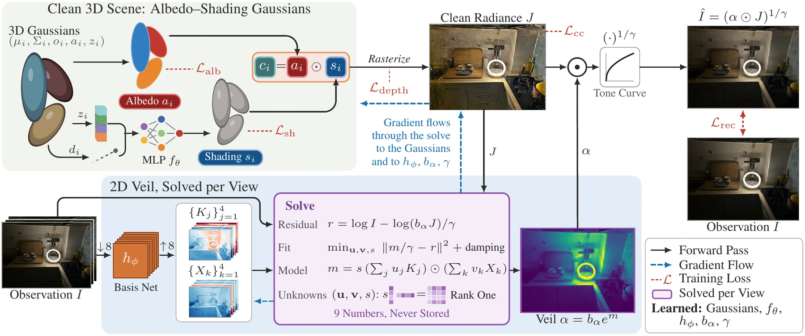
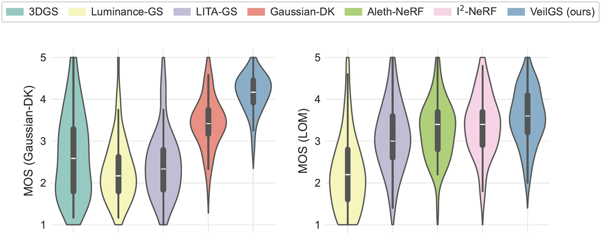

In a dark capture, the darkness is not uniform. How much light reaches a surface depends on where it lies relative to the few light sources, and the camera compresses what remains with a tone curve. Most low-light 3D reconstruction methods either apply one curve to every pixel of a view, so a dark object beside a lamp and a bright one in an unlit corner receive the same correction, or store the darkness in the 3D representation, where it can absorb scene detail.
We present VeilGS, a 3D Gaussian Splatting method for low-light novel view synthesis that treats the degradation as a veil drawn over a clear scene. Each Gaussian carries an albedo and a shading latent instead of spherical harmonics, separating surface colour from illumination. Each view is darkened by a spatially varying gain followed by a global tone curve, and rendering without this veil gives the restored scene. A small network predicts a coarse basis for the gain from the observation, and its coefficients are solved for each view rather than learned. Training through this solve discourages the Gaussians from absorbing what the veil can explain.
VeilGS needs no paired normal-light supervision and stores no per-view parameters. On Gaussian-DK, its restored renders score best on no-reference NIQE and CLIP-IQA and are rated highest in a blind user study with 55 participants. On LOM, it achieves results competitive with the state of the art.

The Gaussians render a clean radiance J, the restored view. A basis network reads the observation I and proposes coarse basis maps, and a solve finds the coefficients under which the low-light model applied to J best explains I, giving the veil α and the prediction Î. The reconstruction loss is back-propagated through the solve. No normal-light image is used.
Each Gaussian replaces its spherical harmonics with an albedo ai and a shading latent zi. A small shared MLP fθ turns the latent and the viewing direction into a shading si, and the colour is ci = ai ⊙ si, so surface colour is kept apart from the light that falls on it.
A view is the clean render darkened by a spatially varying gain and a global tone curve, Î = (α ⊙ J)1/γ. The gain α = bαem is spanned by a rank-one product of coarse basis maps predicted from the observation, too coarse to copy the scene's texture.
The nine numbers of each view's veil are solved by a damped least-squares fit in the log domain and never stored. Training through the solve discourages the Gaussians from absorbing what the veil can explain, and the damping keeps the veil from absorbing the scene.
From dark observations alone, VeilGS separates albedo from shading, solves the veil that darkens each view, and renders the restored scene without it. Applying the veil to the clean render reproduces the observation, at 26.2 dB PSNR on this view of flower and 29.3 dB on livingroom.
Novel-view videos of all twelve scenes: restored renders along a camera path between two held-out views, with no normal-light reference, played in sync. Show all methods side by side, or drag the slider to compare VeilGS (right) with another method (left).
Restored renders of test views against a normal-light reference. The first option shows the low-light input (lower left) and the normal-light frame (upper right).
The veil is a single achromatic gain, so it cannot remove colour casts from coloured light sources. Training through the solve can also become unstable on low-texture scenes. Finally, the albedo–shading decomposition is imperfect and can leave a green cast in the albedo, mostly in dark regions.
Mean scores; red: best, yellow: second best. Per-scene results are in the paper and its appendix.
| Method | NIQE↓ | MUSIQ↑ | CLIP-IQA↑ | MOS↑ |
|---|---|---|---|---|
| 3DGS | 3.71 | 63.14 | 0.445 | 2.68 |
| LITA-GS | 3.80 | 49.18 | 0.322 | 2.45 |
| Luminance-GS | 3.83 | 62.62 | 0.348 | 2.31 |
| Gaussian-DK | 4.15 | 68.84 | 0.487 | 3.44 |
| VeilGS (ours) | 2.63 | 68.37 | 0.518 | 4.15 |
Mean over the twelve scenes of the no-reference scores of the restored render and the user-study MOS (1–5).
| Method | PSNR↑ | SSIM↑ | LPIPS↓ |
|---|---|---|---|
| 3DGS | 18.39 | 0.606 | 0.209 |
| Luminance-GS | 18.88 | 0.611 | 0.219 |
| LITA-GS | 20.20 | 0.641 | 0.198 |
| NeRF-W† | 23.32 | 0.730 | 0.221 |
| Gaussian-DK | 24.72 | 0.810 | 0.119 |
| RestorGS† | 25.04 | 0.817 | 0.112 |
| VeilGS (ours) | 26.36 | 0.839 | 0.103 |
Each held-out dark view against its dark rendering, mean over the eleven scenes that all methods report; VeilGS solves the veil of that view. †: reported by Gaussian-DK or RestorGS.
| Method | PSNR↑ | SSIM↑ | LPIPS↓ | MOS↑ |
|---|---|---|---|---|
| Luminance-GS | 18.34 | 0.800 | 0.294 | 2.23 |
| Aleth-NeRF | 19.87 | 0.754 | 0.417 | 3.27 |
| LITA-GS | 21.14 | 0.829 | 0.233 | 3.11 |
| I2-NeRF | 22.87 | 0.806 | 0.249 | 3.38 |
| VeilGS (ours) | 22.96 | 0.828 | 0.220 | 3.57 |
Restored render against the normal-light frames, mean over the five scenes, and the user-study MOS.
| Method | Training (min)↓ | FPS↑ |
|---|---|---|
| Luminance-GS | 5.1 | 397 |
| LITA-GS | 18.6 | 72 |
| I2-NeRF | 32.1 | 0.57 |
| VeilGS (ours) | 20.7 | 407 |
Mean training time per scene and rendering speed, on one NVIDIA H100 at 500×375.
55 participants rated the restored renders of five methods per scene, blind and shuffled, from 1 (Bad) to 5 (Excellent): looping videos of the twelve Gaussian-DK scenes and still images of the five LOM scenes. On Gaussian-DK, VeilGS has a MOS of 4.15 against 3.44 for Gaussian-DK, and 51 of the 55 participants rate it higher (two-sided Wilcoxon signed-rank test, p < 10−9). On LOM it has 3.57 against 3.38 for I2-NeRF (p = 0.001).
The button below opens an offline copy of the study as participants saw it, with the same questions, instructions and layout; it records nothing. In the study, the videos and images were served under encoded file names, so the page never revealed which method was behind a version, and the methods were shuffled to the letters A–E for every participant.
▷ Try the user study interface

Each violin shows, for one method, the average score that each participant gave it over the scenes of a benchmark.
| Method | alley | bicycle | dormitory | fence | flower | kitchen | livingroom | piano | snowman | staircase | street | tree | Mean ± 95% CI |
|---|---|---|---|---|---|---|---|---|---|---|---|---|---|
| 3DGS | 2.47 | 2.44 | 2.84 | 2.31 | 3.36 | 3.20 | 3.07 | 1.82 | 3.16 | 2.20 | 2.33 | 2.98 | 2.68 ± 0.27 |
| Luminance-GS | 2.80 | 1.95 | 2.62 | 2.33 | 2.45 | 2.69 | 3.31 | 1.82 | 1.98 | 1.80 | 2.11 | 1.87 | 2.31 ± 0.20 |
| LITA-GS | 2.65 | 2.58 | 1.95 | 2.07 | 2.71 | 2.47 | 2.96 | 2.24 | 2.00 | 2.29 | 2.96 | 2.51 | 2.45 ± 0.22 |
| Gaussian-DK | 3.60 | 3.84 | 3.29 | 3.53 | 2.24 | 2.40 | 3.18 | 4.13 | 4.45 | 3.36 | 3.73 | 3.56 | 3.44 ± 0.17 |
| VeilGS (ours) | 4.65 | 3.95 | 4.45 | 4.24 | 4.13 | 4.78 | 4.60 | 3.51 | 2.98 | 3.95 | 4.29 | 4.25 | 4.15 ± 0.12 |
| Method | bike | buu | chair | shrub | sofa | Mean ± 95% CI |
|---|---|---|---|---|---|---|
| Luminance-GS | 1.82 | 2.76 | 2.24 | 1.91 | 2.42 | 2.23 ± 0.25 |
| LITA-GS | 2.71 | 2.95 | 3.55 | 2.35 | 4.00 | 3.11 ± 0.22 |
| Aleth-NeRF | 2.22 | 3.64 | 2.95 | 3.42 | 4.13 | 3.27 ± 0.19 |
| I2-NeRF | 3.82 | 3.60 | 2.84 | 4.00 | 2.65 | 3.38 ± 0.20 |
| VeilGS (ours) | 4.05 | 3.42 | 3.85 | 2.78 | 3.75 | 3.57 ± 0.18 |
@misc{kishawy2026veilgs,
title = {VeilGS: Solving Darkness as a Veil of 2D Basis Maps over Retinex 3DGS},
author = {Kishawy, Mohab and Tang, Chengzhou and Shirani, Shahram and Chen, Jun},
year = {2026},
eprint = {2611.27719},
archivePrefix = {arXiv},
primaryClass = {cs.CV},
url = {https://arxiv.org/abs/2611.27719}
}